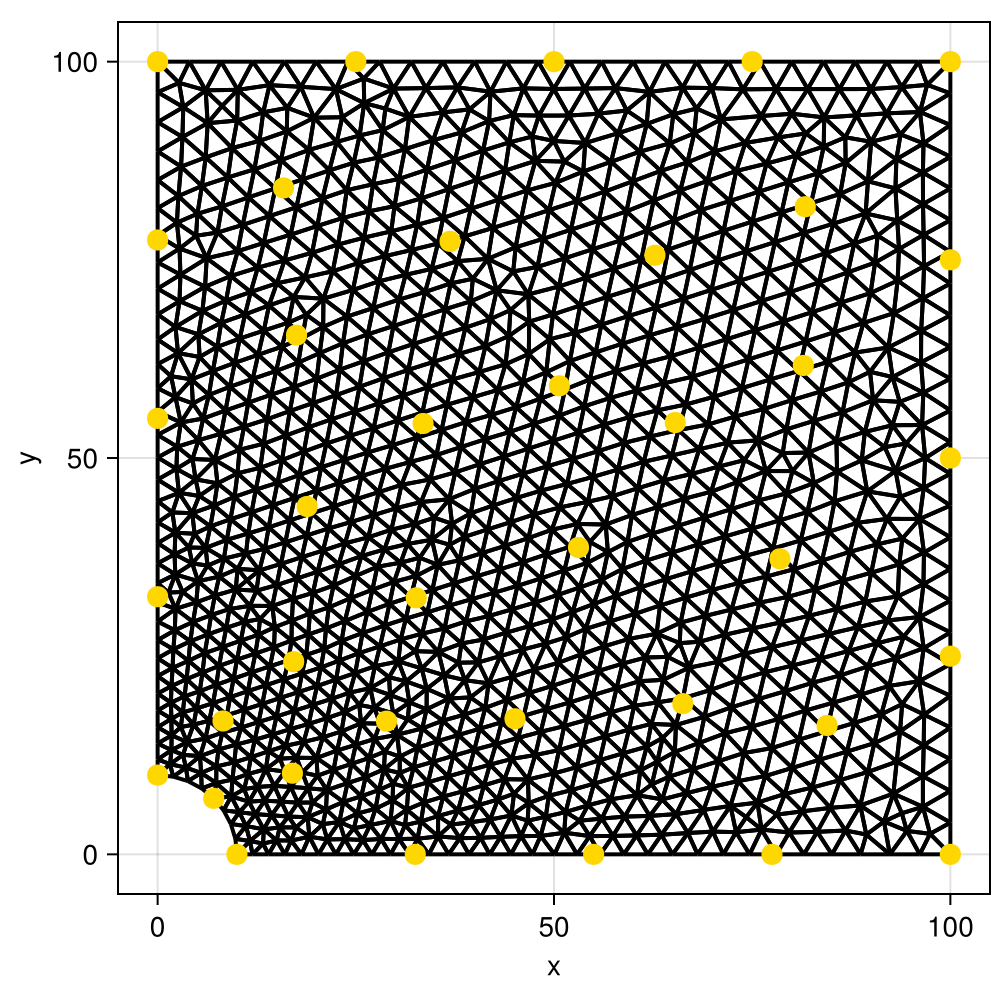
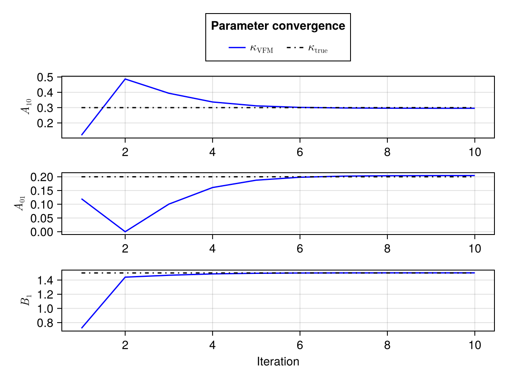
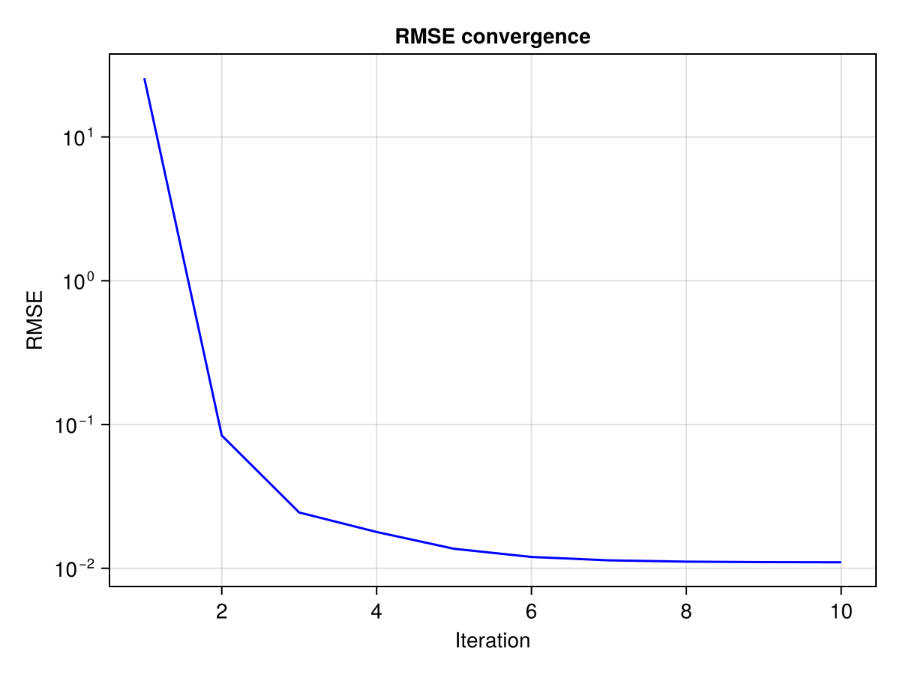
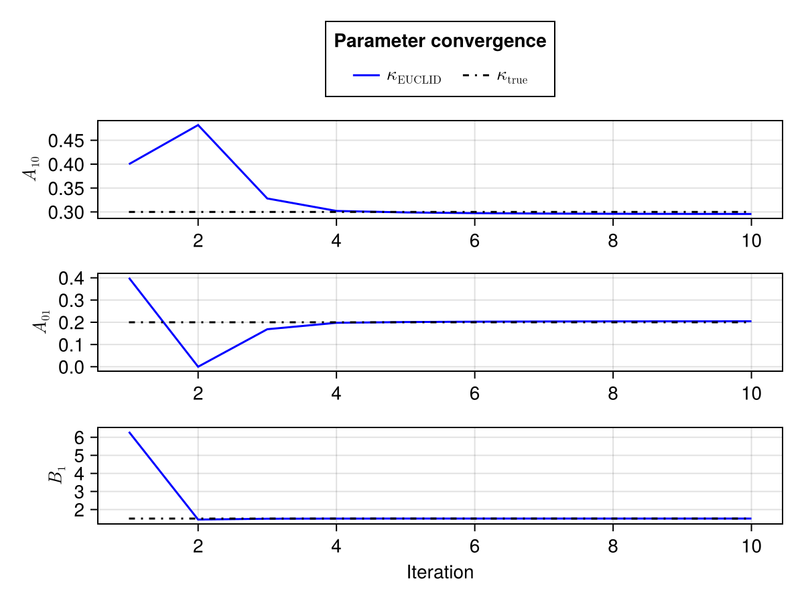
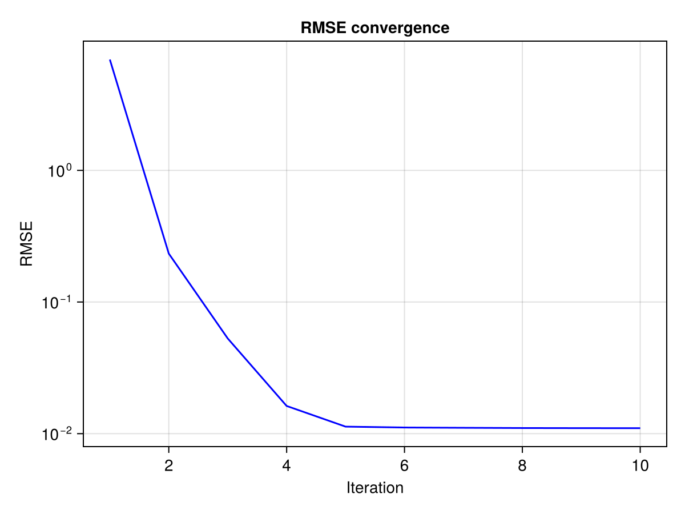

Copyright (c) 2026 Jan Philipp Thiele SPDX-License-Identifier MIT
203: Model parameter identification for a 2D Plate with a hole based on sparse and noisy data
In this example we combine the two previous examples, i.e. the data assimilation from 201 with the model parameter identification of example 202. The goal is to re-identify a known truth that was used to generate synthetic data. The main difference to 202 is that the synthetic data is only measured at a few distinct sensor locations and that additional measurement noise is applied to it.
A single loop of the full algorithm works as follows;
- given a current guess $\kappa^t$ sample and compute a PCE surrogate $u_f^t$
- if $\text{RMSE}(u_f^t,y) < TOL$ we have found a suitable model $\kappa^*=\kappa^t$, finish
- if not, assimilate posterior state $u_a^t$ using StatFEM
- Identify model parameters $\kappa^{t+1}$ based on $u_a^t$ (calibration or discovery)
- If maximum number of iterations is reached, abort. Else, redo loop with $\kappa^{t+1}$.
As before we have two options for identifying the model
- StatFEM-VFM-EGM, using calibration internally
- StatFEM-EUCLID, using discovery internally
The following figure shows the 38 sensor locations on the mesh

Results
For both algorithms we want to look at the convergence of the three nonzero parameters to the true values as well as the convergence of the RMSE between the
StatFEM-VFM-EGM


StatFEM-EUCLID


module Example203_StaFEM_EUCLID_PlateWithHole
using StatFEMEUCLID
using Random
using Distributions
using CairoMakie
using Gmsh
using PolyChaos
using ExtendableGrids
using GridVisualize
using CSV, DataFrames
using Optim
using UMBridge
using LineSearches
using LinearAlgebraWith server_url you can point to a different UMBridge server implementing the model the default is what is provided by the Ferrite.jl-based implementation here
function main(;
μ_F = 0.5,
σ_F = 2.5e-2,
n_PCE = 30,
E = 2.7,
ν = 0.35,
σ_sensor = 0.001,
server_url = "http://localhost:4232"
)
rng = MersenneTwister(2530) #fixed seed for comparability between runsAs before we define our UMBrige models
model_name = "HolePlate2D"
fem_model = UMBridge.HTTPModel(model_name * ".FEM", server_url)
residual_model = UMBridge.HTTPModel(model_name * ".residual", server_url)
projection_model = UMBridge.HTTPModel(model_name * ".projection", server_url)Read in the sensors, grid and (synthetic) measurements
sensor_set = CSV.read("Example203_sensors.csv", EqualSensorSet{Float64}, σ_sensor)
n_dofs = UMBridge.model_output_sizes(fem_model)[1]
calculate_projection_matrix(sensor_set, projection_model, n_dofs)
grid = ExtendableGrids.simplexgrid_from_gmsh("Example201_mesh.msh", Tc = Float64, Ti = Int64)
dataframe_measurements = CSV.read("Example203_measurements.csv", DataFrame)
measurements = [Vector{Float64}(row) for row in eachrow(dataframe_measurements)]
n_sen = length(measurements)Measurements are stored as ux, uy so we need to reorder them to be a single vector
u_measurements = zeros(2 * n_sen)
for i in eachindex(measurements)
u_measurements[i] = measurements[i][1]
u_measurements[n_sen + i] = measurements[i][2]
endSetup for StatFEM_VFM_EGM and StatFEM_EUCLID is practically identical
Define κtrue for plotting and κ0 as initial guess
κ_true_vfm = [0.3, 0.2, 1.5]
κ_0_vfm_egm = [0.12, 0.12, 0.72]Combine HTTPModel information in InverseModelConfig struct VFM-EGM uses calibration, so the known model with nMR=1 and nVOL=1
vfm_egm_config = InverseModelConfig(
fem_model, residual_model,
Dict{String, Any}(
"material" => "MooneyRivlin",
"n_MR" => 1,
"n_VOL" => 1
),
μ_F
)Run StatFEMVFMEGM as defined below
i_ve, κ_history_ve, rmse_history_ve = StatFEM_VFM_EGM(
vfm_egm_config, κ_0_vfm_egm, sensor_set, u_measurements,
rng = rng, sample_distribution = Normal(μ_F, σ_F)
)Define κtrue for plotting and κ0 as initial guess
κ_true_euclid = [0.3, 0.2, 0.0, 0.0, 0.0, 0.0, 0.0, 0.0, 0.0, 1.5]
κ_0_euclid = [0.4, 0.4, 0.3, 0.3, 0.3, 0.1, 0.1, 0.1, 0.1, 6.3]Combine HTTPModel information in InverseModelConfig struct VFM-EGM uses discovery, so the larger model with nMR=3 and nVOL=1
euclid_config = InverseModelConfig(
fem_model, residual_model,
Dict{String, Any}(
"material" => "MooneyRivlin",
"n_MR" => 3,
"n_VOL" => 1
),
μ_F
)Run StatFEM_EUCLID as defined below
i_euclid, κ_history_euclid, rmse_history_euclid = StatFEM_EUCLID(
euclid_config, κ_0_euclid, sensor_set, u_measurements,
rng = rng, sample_distribution = Normal(μ_F, σ_F)
)Generate all the plots that we want to return
fig_vfm_param = plot_vfm_parameters(i_ve, κ_history_ve, κ_true_vfm)
fig_vfm_rmse = plot_rmse(i_ve, rmse_history_ve)
fig_euclid_param = plot_euclid_parameters(i_euclid, κ_history_euclid, κ_true_euclid)
fig_euclid_rmse = plot_rmse(i_euclid, rmse_history_euclid)
sensorvis = plot_sensors(grid, sensor_set.locations)
return fig_vfm_param, fig_vfm_rmse, fig_euclid_param, fig_euclid_rmse, sensorvis
endAs in Example202 we want to penalize the larger model to get a compressible material
function MooneyRivlin_penalization(penalty_multiplier, penalization_weight)
function f(κ)
return abs(sum(κ[1:(end - 1)]) * penalty_multiplier - κ[end]) * penalization_weight
end
function g!(G, κ)
s = sign(sum(κ[1:(end - 1)] * penalty_multiplier) - κ[end])
G[1:(end - 1)] .+= penalization_weight * penalty_multiplier * s
return G[end] -= penalization_weight * s
end
return f, g!
end
function StatFEM_VFM_EGM(
config::InverseModelConfig, κ_0, sensor_set, u_measurements;
optimizer = Fminbox(BFGS(linesearch = BackTracking())),
optimizer_options = Optim.Options(), maxiter = 10, n_PCE = 50, rng = default_rng(), sample_distribution = Normal(0.0, 1.0), TOL = 1.0e-4
)
@info "StatFEM_VFM_EGM"
#allocate intermediate and result vectors
κ_history = zeros(maxiter, length(κ_0))
rmse_history = zeros(maxiter)
κ_t = deepcopy(κ_0)
n_dofs = UMBridge.model_output_sizes(config.fem_model)[1]
n_sen = size(sensor_set)
u_a = zeros(2 * n_dofs)
lower = zeros(length(κ_t))
upper = 10.0 * ones(length(κ_t))
i = 1
while (true)
@info "Starting iteration $i"As described above we start by sampling and constructing a PCE surrogate (Example101)
prior_sample = sample_FEM(
config.fem_model,
n_PCE,
sample_distribution = sample_distribution,
rng = rng,
config = config.config,
extra_params = κ_t,
solution_index = :
)
pce_surrogate = PolyChaosExpansion(prior_sample, polynomials = GaussOrthoPoly(4))
μ_u_f = mean(pce_surrogate)Check if the mean displacements of the surrogate are close enough to the measurements
κ_history[i, :] = κ_t
rmse_history[i] = model_rmse(μ_u_f, sensor_set, u_measurements)
@info rmse_history[i]
if (rmse_history[i] < TOL)
@info "Found sufficient model with RMSE=" rmse_history[i]
return i, κ_history, rmse_history
endor if maxiter was reached
if i == maxiter
@info "Reached maximum number of iterations, aborting"
return i, κ_history, rmse_history
endTake the ux and uy subviews of the PCE to calculate the StatFEM posterior (Example 201)
pce_surrogate_x = PolyChaosExpansion(pce_surrogate.coefficients[:, 1:n_dofs], pce_surrogate.orthogonal_polynomials)
pce_surrogate_y = PolyChaosExpansion(pce_surrogate.coefficients[:, (n_dofs + 1):(2 * n_dofs)], pce_surrogate.orthogonal_polynomials)
u_a[1:n_dofs] = posterior_mean(sensor_set, u_measurements[1:n_sen], pce_surrogate_x)
u_a[(n_dofs + 1):(2 * n_dofs)] = posterior_mean(sensor_set, u_measurements[(n_sen + 1):(2 * n_sen)], pce_surrogate_y)As in Example 202 compute next κ_t through calibration
f_cal, g_cal! = create_residual_objective_and_gradient(config.residual_model, u_a; config = config.config)
optimal_residual = optimize(f_cal, g_cal!, lower, upper, κ_t, optimizer, optimizer_options)
κ_t = Optim.minimizer(optimal_residual)
@show κ_t
i += 1
end
return
end
function StatFEM_EUCLID(config::InverseModelConfig, κ_0, sensor_set, u_measurements; optimizer = Fminbox(BFGS(linesearch = BackTracking())), optimizer_options = Optim.Options(time_limit = 200), maxiter = 10, n_PCE = 50, rng = default_rng(), sample_distribution = Normal(0.0, 1.0), TOL = 1.0e-4)
@info "StatFEM_EUCLID"
κ_history = zeros(maxiter, length(κ_0))
rmse_history = zeros(maxiter)
κ_t = deepcopy(κ_0)
n_dofs = UMBridge.model_output_sizes(config.fem_model)[1]
n_sen = size(sensor_set)
u_a = zeros(2 * n_dofs)
lower = zeros(length(κ_t))
upper = 10.0 * ones(length(κ_t))For EUCLID we also need to define the lasso sweep and get the penalty function and gradient
lasso_sweep = 5 * logrange(1.0e-5, 1.0, 6)
f_mr_penalty, g_mr_penalty! = MooneyRivlin_penalization(3.0, 10.0)
i = 1Apart from the model identification the loop is identical to the one in StatFEMVFMEGM
while (true)
@info "Starting iteration $i"
prior_sample = sample_FEM(
config.fem_model,
n_PCE,
sample_distribution = sample_distribution,
rng = rng,
config = config.config,
extra_params = κ_t,
solution_index = :
)Sample and construct PCE surrogate
pce_surrogate = PolyChaosExpansion(prior_sample, polynomials = GaussOrthoPoly(4))
μ_u_f = mean(pce_surrogate)Check if the mean displacements of the surrogate are close enough to the measurements
κ_history[i, :] = κ_t
rmse_history[i] = model_rmse(μ_u_f, sensor_set, u_measurements)
@info rmse_history[i]
if (rmse_history[i] < TOL)
@info "Found sufficient model with RMSE=" rmse_history[i]
return i, κ_history, rmse_history
endor if maxiter was reached
if i == maxiter
@info "Reached maximum number of iterations, aborting"
return i, κ_history, rmse_history
endTake the ux and uy subviews of the PCE to calculate the StatFEM posterior (Example 201)
pce_surrogate_x = PolyChaosExpansion(pce_surrogate.coefficients[:, 1:n_dofs], pce_surrogate.orthogonal_polynomials)
pce_surrogate_y = PolyChaosExpansion(pce_surrogate.coefficients[:, (n_dofs + 1):(2 * n_dofs)], pce_surrogate.orthogonal_polynomials)
u_a[1:n_dofs] = posterior_mean(sensor_set, u_measurements[1:n_sen], pce_surrogate_x)
u_a[(n_dofs + 1):(2 * n_dofs)] = posterior_mean(sensor_set, u_measurements[(n_sen + 1):(2 * n_sen)], pce_surrogate_y)As in example 202 compute next κ_t through discovery/EUCLID
κ_t, _ = EUCLID(
config, lasso_sweep, κ_t, sensor_set, u_a, u_measurements,
f_penalty = f_mr_penalty, g_penalty = g_mr_penalty!,
upper = upper, lower = lower,
show_info = false, use_gradient = true,
optimizer = optimizer,
optimizer_options = optimizer_options
)
@show κ_t
i += 1
end
return
end
function plot_vfm_parameters(i, κ_history, κ_true)
fig = Figure()
ax_A10 = Axis(fig[1, 1], ylabel = L"A_{10}")
ax_A01 = Axis(fig[2, 1], ylabel = L"A_{01}")
ax_B1 = Axis(fig[3, 1], ylabel = L"B_1", xlabel = "Iteration")
lines!(ax_A10, 1:i, κ_history[1:i, 1], color = :blue, label = L"\kappa_\text{VFM}")
lines!(ax_A01, 1:i, κ_history[1:i, 2], color = :blue)
lines!(ax_B1, 1:i, κ_history[1:i, 3], color = :blue)
lines!(ax_A10, [1, i], [κ_true[1], κ_true[1]], color = :black, linestyle = :dashdot, label = L"\kappa_\text{true}")
lines!(ax_A01, [1, i], [κ_true[2], κ_true[2]], color = :black, linestyle = :dashdot)
lines!(ax_B1, [1, i], [κ_true[3], κ_true[3]], color = :black, linestyle = :dashdot)
fig[0, :] = Legend(fig, ax_A10, "Parameter convergence", orientation = :horizontal)
return fig
end
function plot_euclid_parameters(i, κ_history, κ_true)
fig = Figure()
ax_A10 = Axis(fig[1, 1], ylabel = L"A_{10}")
ax_A01 = Axis(fig[2, 1], ylabel = L"A_{01}")
ax_B1 = Axis(fig[3, 1], ylabel = L"B_1", xlabel = "Iteration")
lines!(ax_A10, 1:i, κ_history[1:i, 1], color = :blue, label = L"\kappa_\text{EUCLID}")
lines!(ax_A01, 1:i, κ_history[1:i, 2], color = :blue)
lines!(ax_B1, 1:i, κ_history[1:i, 10], color = :blue)
lines!(ax_A10, [1, i], [κ_true[1], κ_true[1]], color = :black, linestyle = :dashdot, label = L"\kappa_\text{true}")
lines!(ax_A01, [1, i], [κ_true[2], κ_true[2]], color = :black, linestyle = :dashdot)
lines!(ax_B1, [1, i], [κ_true[10], κ_true[10]], color = :black, linestyle = :dashdot)
fig[0, :] = Legend(fig, ax_A10, "Parameter convergence", orientation = :horizontal)
return fig
end
function plot_rmse(i, rmse_history)
fig = Figure()
ax = Axis(fig[1, 1], yscale = log10, ylabel = "RMSE", xlabel = "Iteration", title = "RMSE convergence")
lines!(ax, 1:i, rmse_history[1:i], color = :blue)
return fig
endThis function generates the synthetic data based on a Mooney-Rivlin model. Note that the forward model has to be able to solve with this material model to regenerate the data. The data in the repository has been generated using the default, i.e. the Ferrite.jl-based implementation here
function generate_synthetic_data(;
F = 0.5,
σ_sensor = 0.001,
server_url = "http://localhost:4232"
)Note that we also need the projection model here since we want to map the FEM solution to the given sensor points.
model_name = "HolePlate2D"
fem_model = UMBridge.HTTPModel(model_name * ".FEM", server_url)
projection_model = UMBridge.HTTPModel(model_name * ".projection", server_url)
A_10 = 0.3
A_01 = 0.2
B_1 = 1.5
κ = [A_10, A_01, B_1]We want to solve with the smallest Mooney-Rivlin model with a total of three parameters
MR_material_config = Dict{String, Any}(
"material" => "MooneyRivlin",
"n_MR" => 1,
"n_VOL" => 1
)
n_dofs = UMBridge.model_output_sizes(fem_model)[1]Since we solve with the exact mean traction force, we don't have to sample and can directly evaluate the forward model once.
u_truth = evaluate_fem_model(
fem_model, F, solution_index = :, config = MR_material_config, extra_params = κ
)Then, we read in the sensor locations and obtain the projection matrix
sensor_set = CSV.read("Example203_sensors.csv", EqualSensorSet{Float64}, σ_sensor)
n_sen = size(sensor_set)
calculate_projection_matrix(sensor_set, projection_model, n_dofs)and project the solution onto the sensor points
u_measured = project(sensor_set, u_truth)Finally, we apply a Gaussian noise to the projected measurements
apply_noise!(sensor_set, reshape(u_measured, (n_sen, 2)); rng = MersenneTwister(2530))before writing the result to file.
dataframe_measurements = DataFrame(u_x = u_measured[1:n_sen], u_y = u_measured[(n_sen + 1):(2 * n_sen)])
return CSV.write("Example203_measurements.csv", dataframe_measurements)
endPlot the underlying grid as well as the sensor points
function plot_sensors(grid, sensor_points::Vector{Vector{Float64}})
sensorvis = GridVisualizer(; Plotter = CairoMakie)
gridplot!(sensorvis, grid, show_colorbar = false)
x = zeros(length(sensor_points))
y = zeros(length(sensor_points))
for i in eachindex(sensor_points)
x[i] = sensor_points[i][1]
y[i] = sensor_points[i][2]
end
customplot!(sensorvis) do ax
CairoMakie.scatter!(ax, x, y, color = :gold, markersize = 15)
end
return sensorvis
end
#The following functions override the default behaviour of GridVisualizeTools
#to remove coloring of cells and boundaries from the sensor plot.
using Colors
import GridVisualizeTools: region_cmap, bregion_cmap
function region_cmap(n)
return fill(RGB(1.0, 1.0, 1.0), n)
end
function bregion_cmap(n)
return fill(RGBA(0.0, 0.0, 0.0, 0.0), n)
end
endThis page was generated using Literate.jl.